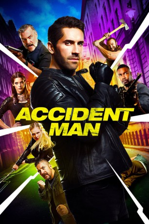
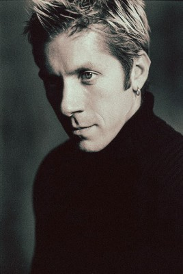
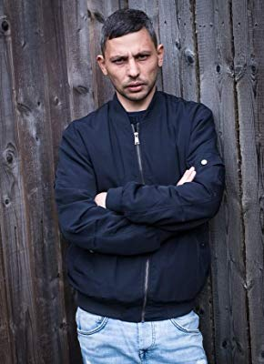

#8221 Accident Man
 gesehen am 14.02.2018
gesehen am 14.02.2018
 
 IMDB-Wertung: 6.1 / 10
IMDB-Wertung: 6.1 / 10  Tomatometer: 100
Tomatometer: 100  Metascore: 0
Metascore: 0 
Mike Fallon ist ein erstklassiger Auftragskiller, der sich darauf versteht, seine Morde als Unfälle zu tarnen. Deswegen nennt man ihn in der Branche „Accident Man“. Als seine Ex-Freundin und große Liebe Beth stirbt, vermutet er, dass es sich ebenfalls um einen Mord handelt. Denn es gibt auch andere Auftragskiller wie ihn, die es bestens verstehen, ihre Taten zu verschleiern. Entschlossen herauszufinden, wer dahinter steckt, und die Täter zur Strecke zu bringen, verbündet er sich mit Beths Freundin Charlie. Auf seinem blutigen Rachefeldzug nimmt er seine Kollegen Mick und Mac aufs Korn...
Jahr: 2018
Dauer: 105 Minuten
FSK: 18
Land: England Studio: Destination FilmsTonspuren: DTS - ,
Untertitel: Deutsch, Englisch,
Auflösung: 1080p (1920x804) Größe: 7946 MB
Genre: Action, Thriller, Krimi
Regisseur: Jesse V. Johnson
Drehbuch: Scott Adkins
Soundtrack: Sean Murray
Darsteller:
 Scott Adkins als Mike Fallon
Scott Adkins als Mike Fallon Ray Stevenson als Big Ray
Ray Stevenson als Big Ray Ashley Greene als Charlie Adams
Ashley Greene als Charlie Adams David Paymer als Milton
David Paymer als Milton Michael Jai White als Mick
Michael Jai White als Mick-  Ray Park als Mac
- Amy Johnston als Jane The Ripper
 Nick Moran als Leonard Kent
Nick Moran als Leonard Kent Ross O'Hennessy als Carnage Cliff
Ross O'Hennessy als Carnage Cliff Tim Man als Triad Biker
Tim Man als Triad Biker- Leon Finnan als Young Fallon
- Brooke Johnston als Beth Carpenter
- Stephen Donald als Poison Pete
- Stu Small als Archie Rudd
- Brittany Ashworth als Fran Adams
- Lee Bagley als Clive Car Owner
- Hannah Banks als Romeo's Gang Estate Thug
- Toni Beard als Skinhead's girlfriend
- Duncan Casey als Mr. Cullum-Kenyon
 Lee Charles als Vor
Lee Charles als Vor Daniel Eghan als Businessman Buying a Newspaper
Daniel Eghan als Businessman Buying a Newspaper Martyn Ford als Masseuse
Martyn Ford als Masseuse- Jasmine Geohagen als Old Lady at Bus Stop
- Jamie Long als Spence
 Jag Patel als Gangster Boss
Jag Patel als Gangster Boss- Clara Perez als Kate
- Mark Sears als Rocker
- Marcus Shakesheff als Bottle Skinhead
- Lee Shone als Yuppie
- Sonnyboy Skelton als Estate thug
- Jonathan Spodofora als The Vicar
- Peter Stanford als Dekka
 Dan Styles als Zim's Bodyguard
Dan Styles als Zim's Bodyguard Roger Yuan als Swordmaster
Roger Yuan als Swordmaster- John Whitby als Poison Pete Victim (uncredited)
- Perry Benson als Finicky Fred
- Ravi Aujla als Atal Zim
- Aaron Thomas Ward als Romeo
- Andrew Barton als Husband
- Kerrieanne Booker als Romeo's Gang Member
- Lee Byford als Funeral Mourner
- Amy Liette Hunter als Wife
- Jackson Kai als Protester
- Mike Kelson als Office Worker
- Chris Kenyon als Stonewash Skinhead
- Swaylee Loughnane als Passerby
- Simon Maroulis als Rocker
- Natasha Rose Mills als Bethany
-  Ekran Mustafa als Protester
- Akash Prasad als Kickz
Datei: X:\FSK18-2018\Accident Man (2018, FSK18, 1920x804).mkv seit 08.02.2018
Festplatte: FSK18
 Es gibt insgesamt 23 Filme in der Gruppe 'FSK18-2018'
Es gibt insgesamt 23 Filme in der Gruppe 'FSK18-2018'